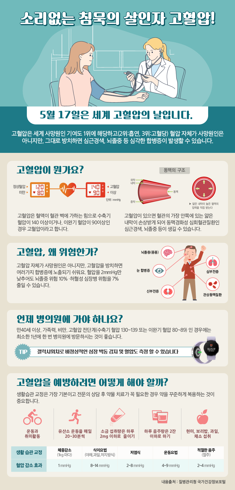

← Design
INFORMATION DESIGN / VISUAL DESIGN WORK
고혈압.
Health Information Design
고혈압을 주제로 한 건강 정보를 도해와 텍스트로 정리한 인포그래픽입니다.
정보를 읽는 순서까지.
설명과 시각 자료를 주제별로 묶고, 제목과 본문에 위계를 두어 내용을 순서대로 읽을 수 있게 구성했습니다.
- MY ROLE
- 정보 구성 · 인포그래픽 · 시각 디자인
- PRODUCTION
- 도해 · 일러스트 · 타이포그래피
- PROJECT
- 정보 디자인
HEALTH INFORMATION / FULL DESIGN

CONTINUE EXPLORING